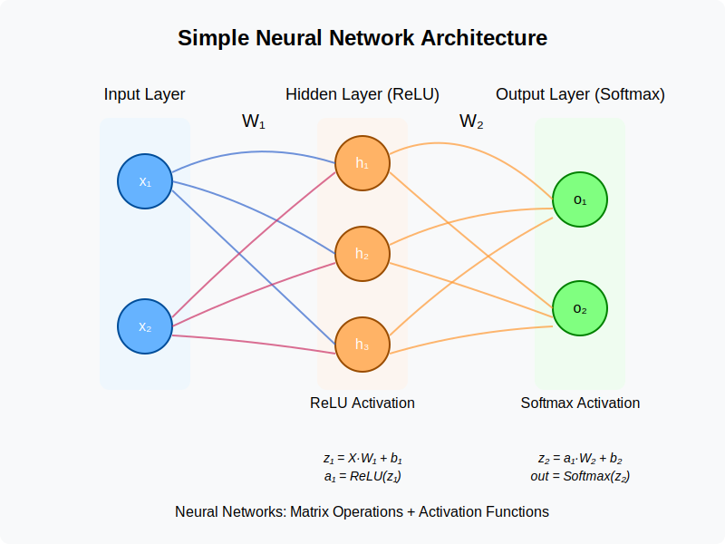

Back to AI Basics: Simple Neural Network
Date Created: May 15, 2025
Date Modified:
You can think of this as step 0 of the series. In this step, we will build a simple neural network from scratch using Python and NumPy. This will help you understand the basic concepts of neural networks before diving into more complex architectures.
I will mainly talk about the math underneath. Hopefully, when you done with this blog, you will understand what is happenning under the hood:
- Matrix multiplications (np.dot)
- Simple activation functions (ReLU, softmax)
- Basic math operations
If you want to understand layers in neural networks in a more practical way, you can check out my MLP on MNIST blog. I will show you how to build a simple MLP using PyTorch and train it on the MNIST dataset.
Or if you want to know more about optimizers, loss functions, etc., check out my GitHub repo for this series.
The Working
A neural network works by mimicking how the human brain processes information.
It consists of multiple layers of interconnected nodes (neurons), not just one, where each node takes input, applies weights and a bias, runs it through an activation function, and passes the result to the next layer.
During training, the network adjusts its weights using backpropagation to minimize the error between its predictions and the actual values. Over time, it learns to recognize patterns and make accurate predictions or classifications based on the input data.
In this blog, I will show you how to implement a simple neural network from scratch using Python and NumPy.
The Model
Our model will be Input Layer (2 neurons) → Hidden Layer (3 neurons with ReLU) → Output Layer (2 neurons with Softmax)
This is a basic Multilayer Perceptron (MLP) (I talked more about MLP here). It is typically refers to fully connected feedforward neural networks with at least one hidden layer, just like this one. I will follow closely with my notebook for this blog post. You can view it here.
Code for this topic on GitHubThe Working
The Input
We will use a simple dataset of 200 samples with 2 features and 2 classes. The dataset is generated using NumPy's random number generator.
The input layer has 2 neurons that take the 2 features of the dataset.
The Hidden Layer
The hidden layer has 3 neurons that apply the ReLU activation function.
The input data is passed through the hidden layer. Each neuron in the hidden layer takes the input from the input layer, applies weights and a bias, and runs it through the ReLU activation function.
output = activation(weights · inputs + bias)
or in this case:
a = ReLU(w · x + b)
So for example:
| Layer | Description | Shape | Values |
|---|---|---|---|
| Input → Hidden Weights | Weights connecting input to hidden | (2, 3) | [[-0.6, 0.6, 0.4], [-0.6, 0.7, 0.5]] |
| Hidden Biases | Biases of hidden layer | (1, 3) | [[0.3, 0.5, 0.3]] |
| Hidden → Output Weights | Weights connecting hidden to output | (3, 2) | [[-0.7, 0.7], [0.8, -0.8], [0.5, -0.5]] |
| Output Biases | Biases of output layer | (1, 2) | [[-0.4, 0.4]] |